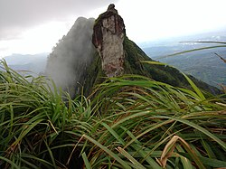
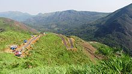
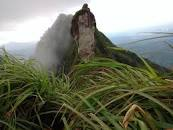
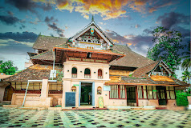
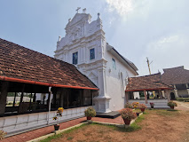
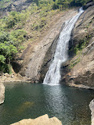

Kottayam is a city in the Indian state of Kerala, flanked by the Western Ghats on the east and the Vembanad Lake and paddy fields of Kuttanad on the west. It is the district headquarters of Kottayam district, located in south-west Kerala
Illikavu Kallu



Illikkal Kallu is a Thalanadu located on top of the Illickal Malaa in the Kottayam district of Kerala, India.The distance from kottayam railway station to illikal kallu is 57km. Situated at around 3500 feet above sea level, Illickal Kallu is a major tourist attraction in Thalanadu. L. S. G.D., Thalanadu village of Meenachil taluk. Only one half of the original rock remains, as the other half of the rock has fallen off. The nearest town is Teekoy. Numerous mountain streams originate from this peak and flow down to form the Meenachil River. Tourists must trek <1 km to reach the summit of the peak.
Thazhathangady Juma Masjid

Thazhathangady Juma Masjid is a mosque situated in Thazhathangady, one of the Heritage Zones of Kerala, India, near the town of Kottayam, and on the banks of the Meenachil river. It is one of the oldest mosques in India, dating back more than 1000 years.
Kottayam Cheriapally

St. Mary's Orthodox Syrian Church, Kottayam, commonly known as Kottayam Cheriapally, is a Malankara Orthodox Syrian Church located in Kottayam, Kerala, India. Cheriapally meaning ‘small church’, whose appearance contradicts its name, is one of the oldest and well-preserved churches in the state.
Maramala Waterfall

Marmala Waterfall is a waterfall which is located a few kilometres away from Erattupetta, in Kottayam district, Kerala, India, It is exactly 8 km from Teekoy. The road from Mangalagiri to Marmala Waterfall is currently under construction.